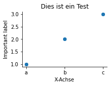

Fallstudie: Investieren via Aktiensparplan
%load_ext autoreload
%autoreload 2
Fallstudie: Investieren via Aktiensparplan¶
Enden wollen wir das einleitende Kapitel mit einer Fallstudie. In dieser Fallstudie werden Dinge vorgegriffen, die Sie an dieser Stelle noch nicht zu 100% nachvollziehen können. Ziel der Fallstudie ist nicht, dass Sie jede Code-Zeile nachvollziehen können. Vielmehr sollen Sie einen Eindruck davon vermittelt bekommen, was Sie
Daten
Aufbereitung
Berechnungen
Analyse
Visualisierung / Kommunikation
import sys
sys.path.insert(0, "S/")
from utility import plot, load_stockdata
from datetime import datetime
import time
import pandas as pd
pd.options.plotting.backend = 'matplotlib'
df = (load_stockdata(ticker="^GDAXI", frequency="1d", start="1-1-1990", end="7-18-2022")
.filter(items=["Date","Adj Close"])
.plot(x="Date", y="Adj Close")
#.pipe(plot,
# x="Date",
# y="Adj Close",
# title="DAX-Kurs\n(1990 bis heute)",
# xlabel="Datum")
)
df
<AxesSubplot:xlabel='Date'>

df
<AxesSubplot:xlabel='Date'>
df.filter(items=["Date", "Adj Close"])
---------------------------------------------------------------------------
AttributeError Traceback (most recent call last)
<ipython-input-6-b2675600e558> in <module>
----> 1 df.filter(items=["Date", "Adj Close"])
AttributeError: 'AxesSubplot' object has no attribute 'filter'
print("https://query1.finance.yahoo.com/v7/finance/download/GOOG?period1=1657670400&period2=1658102400&interval=1d&events=history&includeAdjustedClose=true")
https://query1.finance.yahoo.com/v7/finance/download/GOOG?period1=1626615019&period2=1658151019&interval=1d&events=history&includeAdjustedClose=true
a = int(datetime.strptime("2021-7-18 15:24:00", "%Y-%m-%d %H:%M:%S").timestamp())
f"abc{a}&bcd"
'abc1626614640&bcd'
https://query1.finance.yahoo.com/v7/finance/download/GOOG?period1=1657670400&period2=1658102400&interval=1d&events=history&includeAdjustedClose=true
'1286056800'
datetime
---------------------------------------------------------------------------
TypeError Traceback (most recent call last)
<ipython-input-74-a9afd05c4900> in <module>
----> 1 datetime.strftime(1626615019)
TypeError: descriptor 'strftime' for 'datetime.date' objects doesn't apply to a 'int' object
pd.read_csv(url)
---------------------------------------------------------------------------
HTTPError Traceback (most recent call last)
<ipython-input-67-7e3ce7e6e77c> in <module>
----> 1 pd.read_csv(url)
~/opt/anaconda3/lib/python3.8/site-packages/pandas/io/parsers.py in parser_f(filepath_or_buffer, sep, delimiter, header, names, index_col, usecols, squeeze, prefix, mangle_dupe_cols, dtype, engine, converters, true_values, false_values, skipinitialspace, skiprows, skipfooter, nrows, na_values, keep_default_na, na_filter, verbose, skip_blank_lines, parse_dates, infer_datetime_format, keep_date_col, date_parser, dayfirst, cache_dates, iterator, chunksize, compression, thousands, decimal, lineterminator, quotechar, quoting, doublequote, escapechar, comment, encoding, dialect, error_bad_lines, warn_bad_lines, delim_whitespace, low_memory, memory_map, float_precision)
674 )
675
--> 676 return _read(filepath_or_buffer, kwds)
677
678 parser_f.__name__ = name
~/opt/anaconda3/lib/python3.8/site-packages/pandas/io/parsers.py in _read(filepath_or_buffer, kwds)
428 # though mypy handling of conditional imports is difficult.
429 # See https://github.com/python/mypy/issues/1297
--> 430 fp_or_buf, _, compression, should_close = get_filepath_or_buffer(
431 filepath_or_buffer, encoding, compression
432 )
~/opt/anaconda3/lib/python3.8/site-packages/pandas/io/common.py in get_filepath_or_buffer(filepath_or_buffer, encoding, compression, mode)
170
171 if isinstance(filepath_or_buffer, str) and is_url(filepath_or_buffer):
--> 172 req = urlopen(filepath_or_buffer)
173 content_encoding = req.headers.get("Content-Encoding", None)
174 if content_encoding == "gzip":
~/opt/anaconda3/lib/python3.8/site-packages/pandas/io/common.py in urlopen(*args, **kwargs)
139 import urllib.request
140
--> 141 return urllib.request.urlopen(*args, **kwargs)
142
143
~/opt/anaconda3/lib/python3.8/urllib/request.py in urlopen(url, data, timeout, cafile, capath, cadefault, context)
220 else:
221 opener = _opener
--> 222 return opener.open(url, data, timeout)
223
224 def install_opener(opener):
~/opt/anaconda3/lib/python3.8/urllib/request.py in open(self, fullurl, data, timeout)
529 for processor in self.process_response.get(protocol, []):
530 meth = getattr(processor, meth_name)
--> 531 response = meth(req, response)
532
533 return response
~/opt/anaconda3/lib/python3.8/urllib/request.py in http_response(self, request, response)
638 # request was successfully received, understood, and accepted.
639 if not (200 <= code < 300):
--> 640 response = self.parent.error(
641 'http', request, response, code, msg, hdrs)
642
~/opt/anaconda3/lib/python3.8/urllib/request.py in error(self, proto, *args)
567 if http_err:
568 args = (dict, 'default', 'http_error_default') + orig_args
--> 569 return self._call_chain(*args)
570
571 # XXX probably also want an abstract factory that knows when it makes
~/opt/anaconda3/lib/python3.8/urllib/request.py in _call_chain(self, chain, kind, meth_name, *args)
500 for handler in handlers:
501 func = getattr(handler, meth_name)
--> 502 result = func(*args)
503 if result is not None:
504 return result
~/opt/anaconda3/lib/python3.8/urllib/request.py in http_error_default(self, req, fp, code, msg, hdrs)
647 class HTTPDefaultErrorHandler(BaseHandler):
648 def http_error_default(self, req, fp, code, msg, hdrs):
--> 649 raise HTTPError(req.full_url, code, msg, hdrs, fp)
650
651 class HTTPRedirectHandler(BaseHandler):
HTTPError: HTTP Error 400: Bad Request
import matplotlib.pyplot as plt
import seaborn as sns
import pandas as pd
url = "https://query1.finance.yahoo.com/v7/finance/download/EXS1.DE?period1=1199232000&period2=1657497600&interval=1d&events=history&includeAdjustedClose=true"
data = pd.read_csv(url, parse_dates=["Date"])
plot(x="Date", y="Adj Close", data=data, title="Dies ist ein Test", kind=∫)

type(data["Date"][0])
str
plt.plot(data["Date"], data["Adj Close"])
[<matplotlib.lines.Line2D at 0x7f93a2b40ca0>]

data1 = {"A": [1,2,3],
"B": list("abc")}
data2 = {"A": [3,2,1],
"B": list("cba")}
data = [data1, data2]
df = pd.concat((pd.DataFrame(d) for d in data))
plot(x="B", y="A", data=df,
plot_type="scatter",
size=(3,2),
title="Dies ist ein Test",
ylabel="Important label",
xlabel="X-Achse")

data["Adj Close"].plot()
<matplotlib.axes._subplots.AxesSubplot at 0x7ff773058640>

from glob import glob
from pathlib import Path
path = Path("../Data")
list(path.glob("*"))
[]
list(path.glob("*"))
[PosixPath('Data/untitled.txt')]
from pathlib import Path
BASE_DIR = Path(__file__).resolve().parent.parent
BASE_DIR
---------------------------------------------------------------------------
NameError Traceback (most recent call last)
<ipython-input-88-99a39500946b> in <module>
1 from pathlib import Path
2
----> 3 BASE_DIR = Path(__file__).resolve().parent.parent
4 BASE_DIR
NameError: name '__file__' is not defined
import numpy as np
class TestMe():
def __init__(self, x):
self.x = x
self.context = locals()
def __enter__(self, *args):
print("Enter")
#self.context = globals()
return self
def __exit__(self, *args):
self.context = locals()
self.test = args
import pprint
t = TestMe(3)
with t as model2:
data = np.array([1,2,3,4,5])
strategy = lambda x: x * 2
t.context
Enter
{'self': <__main__.TestMe at 0x7f9649630640>, 'args': (None, None, None)}
data
array([1, 2, 3, 4, 5])
import threading
locals()
{'__name__': '__main__',
'__doc__': 'Automatically created module for IPython interactive environment',
'__package__': None,
'__loader__': None,
'__spec__': None,
'__builtin__': <module 'builtins' (built-in)>,
'__builtins__': <module 'builtins' (built-in)>,
'_ih': ['',
"get_ipython().run_line_magic('load_ext', 'autoreload')\nget_ipython().run_line_magic('autoreload', '2')",
'from UtilityCode.utility import plot, load_stockdata\nfrom datetime import datetime\nimport time',
'df = (load_stockdata(ticker="^GDAXI", frequency="1d", start="1-1-1990", end="7-18-2022")\n .filter(items=["Date","Adj Close"])\n .plot(x="Date", y="Adj Close")\n #.pipe(plot, \n # x="Date", \n # y="Adj Close", \n # title="DAX-Kurs\\n(1990 bis heute)",\n # xlabel="Datum")\n )',
'from UtilityCode.utility import plot, load_stockdata\nfrom datetime import datetime\nimport time\nimport hvplot.pandas',
'df = (load_stockdata(ticker="^GDAXI", frequency="1d", start="1-1-1990", end="7-18-2022")\n .filter(items=["Date","Adj Close"])\n .plot(x="Date", y="Adj Close")\n #.pipe(plot, \n # x="Date", \n # y="Adj Close", \n # title="DAX-Kurs\\n(1990 bis heute)",\n # xlabel="Datum")\n )',
'df = (load_stockdata(ticker="^GDAXI", frequency="1d", start="1-1-1990", end="7-18-2022")\n .filter(items=["Date","Adj Close"])\n .hvplot(x="Date", y="Adj Close")\n #.pipe(plot, \n # x="Date", \n # y="Adj Close", \n # title="DAX-Kurs\\n(1990 bis heute)",\n # xlabel="Datum")\n )',
'df',
'df = (load_stockdata(ticker="^GDAXI", frequency="1d", start="1-1-1990", end="7-18-2022")\n .filter(items=["Date","Adj Close"])\n #.hvplot(x="Date", y="Adj Close")\n #.pipe(plot, \n # x="Date", \n # y="Adj Close", \n # title="DAX-Kurs\\n(1990 bis heute)",\n # xlabel="Datum")\n )',
"from UtilityCode.utility import plot, load_stockdata\nfrom datetime import datetime\nimport time\npd.options.plotting.backend = 'holoviews'",
"from UtilityCode.utility import plot, load_stockdata\nfrom datetime import datetime\nimport time\nimport pandas as pd\npd.options.plotting.backend = 'holoviews'",
'df = (load_stockdata(ticker="^GDAXI", frequency="1d", start="1-1-1990", end="7-18-2022")\n .filter(items=["Date","Adj Close"])\n plot(x="Date", y="Adj Close")\n #.pipe(plot, \n # x="Date", \n # y="Adj Close", \n # title="DAX-Kurs\\n(1990 bis heute)",\n # xlabel="Datum")\n )',
'df = (load_stockdata(ticker="^GDAXI", frequency="1d", start="1-1-1990", end="7-18-2022")\n .filter(items=["Date","Adj Close"])\n .plot(x="Date", y="Adj Close")\n #.pipe(plot, \n # x="Date", \n # y="Adj Close", \n # title="DAX-Kurs\\n(1990 bis heute)",\n # xlabel="Datum")\n )',
'df = (load_stockdata(ticker="^GDAXI", frequency="1d", start="1-1-1990", end="7-18-2022")\n .filter(items=["Date","Adj Close"])\n .plot(x="Date", y="Adj Close")\n #.pipe(plot, \n # x="Date", \n # y="Adj Close", \n # title="DAX-Kurs\\n(1990 bis heute)",\n # xlabel="Datum")\n )\ndf',
"from UtilityCode.utility import plot, load_stockdata\nfrom datetime import datetime\nimport time\nimport pandas as pd\npd.options.plotting.backend = 'seaborn'",
"from UtilityCode.utility import plot, load_stockdata\nfrom datetime import datetime\nimport time\nimport pandas as pd\npd.options.plotting.backend = 'matplotlib'",
'df = (load_stockdata(ticker="^GDAXI", frequency="1d", start="1-1-1990", end="7-18-2022")\n .filter(items=["Date","Adj Close"])\n .plot(x="Date", y="Adj Close")\n #.pipe(plot, \n # x="Date", \n # y="Adj Close", \n # title="DAX-Kurs\\n(1990 bis heute)",\n # xlabel="Datum")\n )\ndf',
'class TestMe():\n def __init__(self, x):\n self.x = x\n \n def __enter__(self):\n print("Enter")\n \n def __exit__(self):\n print("Exit")',
'with TestMe("3") as fin:\n print("Hallo")\n ',
'class TestMe():\n def __init__(self, x):\n self.x = x\n \n def __enter__(self):\n print("Enter")\n \n def __exit__(self, a, b, c):\n print("Exit")',
'with TestMe("3") as fin:\n print("Hallo")\n ',
'class TestMe():\n def __init__(self, x):\n self.x = x\n \n def __enter__(self):\n print("Enter")\n \n def __exit__(self, *args):\n print("Exit")',
'with TestMe("3") as fin:\n print("Hallo")\n ',
'class TestMe():\n def __init__(self, x):\n self.x = x\n \n def __enter__(self):\n print("Enter")\n \n def __exit__(self, *args):\n self.test = args\n print("Exit")',
'with TestMe("3") as fin:\n print("Hallo")\n ',
't = TestMe(3)\nwith t as fin:\n print("Hallo")\n ',
't',
't = TestMe(3)\nwith t as fin:\n print("Hallo")\n\nt.test',
't = TestMe(3)\nwith t as fin:\n fin = 3\n\nt.test',
't = TestMe(3)\nwith t as fin:\n t.x = 5\n\nt.test',
't',
't.x',
't = TestMe(3)\nwith t as fin:\n a = 4\n \n\nt.test',
'class TestMe():\n def __init__(self, x):\n self.x = x\n \n def __enter__(self):\n \n print("Enter")\n \n def __exit__(self, *args):\n self.x\n self.test = args\n print("Exit")',
't = TestMe(3)\nwith t as fin:\n a = 4\n \n\nt.test',
'class TestMe():\n def __init__(self, x):\n self.x = x\n \n def __enter__(self):\n \n print("Enter")\n \n def __exit__(self, *args):\n print(self.x)\n self.test = args\n print("Exit")',
't = TestMe(3)\nwith t as fin:\n a = 4\n \n\nt.test',
't = TestMe(3)\nwith t:\n a = 4\n t\n \n\nt.test',
't = TestMe(3)\nwith t as model:\n model.x = 14\n t\n \n\nt.test',
't = TestMe(3)\nwith t as model:\n model.x = 14\n print(model)\n t\n \n\nt.test',
't = TestMe(3)\nwith t as model:\n type(model)\n model.x = 14\n print(model)\n \n \n\nt.test',
'class TestMe():\n def __init__(self, x):\n self.x = x\n \n def __enter__(self):\n print("Enter")\n return self\n \n def __exit__(self, *args):\n print(self.x)\n self.test = args\n print("Exit")',
't = TestMe(3)\nwith t as model:\n type(model)\n model.x = 14\n print(model)\n \n \n\nt.test',
'model',
'model == t',
'model is t',
't = TestMe(3)\nwith t as pm:\n pm.data = 14\n pm.strategy = lambda x: x * 2\n \n \n \n\nt.test',
'model is t',
't = TestMe(3)\nwith t as pm:\n data = np.array([1,2,3,4,5])\n strategy = lambda x: x * 2\n pm.x = [data, strategy]\n \n \n \n\nt.test',
'import numpy as np\nclass TestMe():\n def __init__(self, x):\n self.x = x\n \n def __enter__(self):\n print("Enter")\n return self\n \n def __exit__(self, *args):\n print(self.x)\n self.test = args\n print("Exit")',
'import numpy as np\n\nclass TestMe():\n def __init__(self, x):\n self.x = x\n \n def __enter__(self):\n print("Enter")\n return self\n \n def __exit__(self, *args):\n print(self.x)\n self.test = args\n print("Exit")',
't = TestMe(3)\nwith t as pm:\n data = np.array([1,2,3,4,5])\n strategy = lambda x: x * 2\n pm.x = [data, strategy]\n \n \n \n\nt.test',
'pm',
't',
't.test',
't.x',
'import numpy as np\n\nclass TestMe():\n def __init__(self, x):\n self.x = x\n \n def __enter__(self):\n print("Enter")\n return self\n \n def __exit__(self, *args):\n self.__enter__\n print(self.x)\n self.test = args\n print("Exit")',
't = TestMe(3)\nwith t as model:\n data = np.array([1,2,3,4,5])\n strategy = lambda x: x * 2\n \nt.test',
't.x',
't',
't.test',
'import numpy as np\n\nclass TestMe():\n def __init__(self, x):\n self.x = x\n \n def __enter__(self):\n print("Enter")\n return self\n \n def __exit__(self, *args):\n self.__enter__()\n print(self.x)\n self.test = args\n print("Exit")',
't = TestMe(3)\nwith t as model:\n data = np.array([1,2,3,4,5])\n strategy = lambda x: x * 2\n \nt.test',
'import numpy as np\n\nclass TestMe():\n def __init__(self, x):\n self.x = x\n \n def __enter__(self, *args):\n print("Enter")\n return self\n \n def __exit__(self, *args):\n print(self.x)\n self.test = args\n print("Exit")',
't = TestMe(3)\nwith t as model:\n data = np.array([1,2,3,4,5])\n strategy = lambda x: x * 2\n \nt.test',
'import numpy as np\n\nclass TestMe():\n def __init__(self, x):\n self.x = x\n \n def __enter__(self, *args):\n print("Enter")\n print(args)\n return self\n \n def __exit__(self, *args):\n print(self.x)\n self.test = args\n print("Exit")',
't = TestMe(3)\nwith t as model:\n data = np.array([1,2,3,4,5])\n strategy = lambda x: x * 2\n \nt.test',
'import numpy as np\n\nclass TestMe():\n def __init__(self, x):\n self.x = x\n \n def __enter__(self, *args):\n print("Enter")\n self.args = args \n return self\n \n def __exit__(self, *args):\n print(self.x)\n self.test = args\n print("Exit")',
't = TestMe(3)\nwith t as model:\n data = np.array([1,2,3,4,5])\n strategy = lambda x: x * 2\n \nt.test',
't.test',
't = TestMe(3)\nwith t(1,2,3) as model:\n data = np.array([1,2,3,4,5])\n strategy = lambda x: x * 2\n \nt.test',
'import numpy as np\n\nclass TestMe():\n def __init__(self, x):\n self.x = x\n \n def __enter__(self, *args):\n print("Enter")\n self.__class__ \n return self\n \n def __exit__(self, *args):\n print(self.x)\n self.test = args\n print("Exit")',
't = TestMe(3)\nwith as model:\n data = np.array([1,2,3,4,5])\n strategy = lambda x: x * 2\n \nt.test',
't = TestMe(3)\nwith t as model:\n data = np.array([1,2,3,4,5])\n strategy = lambda x: x * 2\n \nt.test',
'import numpy as np\n\nclass TestMe():\n def __init__(self, x):\n self.x = x\n \n def __enter__(self, *args):\n print("Enter")\n self.__class__ \n return self\n \n def __exit__(self, *args):\n print(self.x)\n self.test = args\n print("Exit")',
't = TestMe(3)\nwith t as model:\n data = np.array([1,2,3,4,5])\n strategy = lambda x: x * 2\n \nt.test',
'import numpy as np\n\nclass TestMe():\n def __init__(self, x):\n self.x = x\n \n def __enter__(self, *args):\n print("Enter")\n self.__class__.get_contexts() \n return self\n \n def __exit__(self, *args):\n print(self.x)\n self.test = args\n print("Exit")',
't = TestMe(3)\nwith t as model:\n data = np.array([1,2,3,4,5])\n strategy = lambda x: x * 2\n \nt.test',
'import threading',
'threading.local()',
't = threading.local()',
't',
'import numpy as np\n\nclass TestMe():\n def __init__(self, x):\n self.x = x\n \n def __enter__(self, *args):\n print("Enter")\n cls.get_attributes()\n return self\n \n def __exit__(self, *args):\n print(self.x)\n self.test = args\n print("Exit")',
't = TestMe(3)\nwith t as model:\n data = np.array([1,2,3,4,5])\n strategy = lambda x: x * 2\n \nt.test',
'import numpy as np\n\nclass TestMe():\n def __init__(self, x):\n self.x = x\n \n def __enter__(cls, *args):\n print("Enter")\n cls.get_attributes()\n return self\n \n def __exit__(self, *args):\n print(self.x)\n self.test = args\n print("Exit")',
't = TestMe(3)\nwith t as model:\n data = np.array([1,2,3,4,5])\n strategy = lambda x: x * 2\n \nt.test',
'import numpy as np\n\nclass TestMe():\n def __init__(self, x):\n self.x = x\n \n def __enter__(self, *args):\n print("Enter") \n return self\n \n def __exit__(self, *args):\n print(self.x)\n self.test = args\n print("Exit")',
't = TestMe(3)\nwith t as model:\n data = np.array([1,2,3,4,5])\n strategy = lambda x: x * 2\n \nt.test',
't.test',
'import threading',
't = threading.local()',
't',
"get_ipython().run_line_magic('pinfo', 't')",
"get_ipython().run_line_magic('pinfo', 'threading.local')",
'locals',
'locals()'],
'_oh': {7: :Curve [Date] (Adj Close),
13: :Curve [Date] (Adj Close),
16: <AxesSubplot:xlabel='Date'>,
26: <__main__.TestMe at 0x7fc0699b4820>,
27: (None, None, None),
28: (None, None, None),
29: (None, None, None),
30: <__main__.TestMe at 0x7fc0788d1370>,
31: 5,
32: (None, None, None),
34: (None, None, None),
36: (None, None, None),
37: (None, None, None),
42: (None, None, None),
43: <__main__.TestMe at 0x7fc0699ca4c0>,
44: True,
45: True,
46: (None, None, None),
47: False,
51: (None, None, None),
52: <__main__.TestMe at 0x7fc0699ca310>,
53: <__main__.TestMe at 0x7fc0699ca310>,
54: (None, None, None),
55: [array([1, 2, 3, 4, 5]), <function __main__.<lambda>(x)>],
57: (None, None, None),
58: 3,
59: <__main__.TestMe at 0x7fc04c6cbfa0>,
60: (None, None, None),
62: (None, None, None),
64: (None, None, None),
66: (None, None, None),
68: (None, None, None),
69: (None, None, None),
73: (None, None, None),
75: (None, None, None),
79: <_thread._local at 0x7fc0584e0c70>,
81: <_thread._local at 0x7fc0699d6ef0>,
87: (None, None, None),
88: (None, None, None),
91: <_thread._local at 0x7fc0584e9400>,
94: <function locals()>},
'_dh': ['/Users/felix/Dropbox/02_FH/01 Lehre/BA/Skript'],
'In': ['',
"get_ipython().run_line_magic('load_ext', 'autoreload')\nget_ipython().run_line_magic('autoreload', '2')",
'from UtilityCode.utility import plot, load_stockdata\nfrom datetime import datetime\nimport time',
'df = (load_stockdata(ticker="^GDAXI", frequency="1d", start="1-1-1990", end="7-18-2022")\n .filter(items=["Date","Adj Close"])\n .plot(x="Date", y="Adj Close")\n #.pipe(plot, \n # x="Date", \n # y="Adj Close", \n # title="DAX-Kurs\\n(1990 bis heute)",\n # xlabel="Datum")\n )',
'from UtilityCode.utility import plot, load_stockdata\nfrom datetime import datetime\nimport time\nimport hvplot.pandas',
'df = (load_stockdata(ticker="^GDAXI", frequency="1d", start="1-1-1990", end="7-18-2022")\n .filter(items=["Date","Adj Close"])\n .plot(x="Date", y="Adj Close")\n #.pipe(plot, \n # x="Date", \n # y="Adj Close", \n # title="DAX-Kurs\\n(1990 bis heute)",\n # xlabel="Datum")\n )',
'df = (load_stockdata(ticker="^GDAXI", frequency="1d", start="1-1-1990", end="7-18-2022")\n .filter(items=["Date","Adj Close"])\n .hvplot(x="Date", y="Adj Close")\n #.pipe(plot, \n # x="Date", \n # y="Adj Close", \n # title="DAX-Kurs\\n(1990 bis heute)",\n # xlabel="Datum")\n )',
'df',
'df = (load_stockdata(ticker="^GDAXI", frequency="1d", start="1-1-1990", end="7-18-2022")\n .filter(items=["Date","Adj Close"])\n #.hvplot(x="Date", y="Adj Close")\n #.pipe(plot, \n # x="Date", \n # y="Adj Close", \n # title="DAX-Kurs\\n(1990 bis heute)",\n # xlabel="Datum")\n )',
"from UtilityCode.utility import plot, load_stockdata\nfrom datetime import datetime\nimport time\npd.options.plotting.backend = 'holoviews'",
"from UtilityCode.utility import plot, load_stockdata\nfrom datetime import datetime\nimport time\nimport pandas as pd\npd.options.plotting.backend = 'holoviews'",
'df = (load_stockdata(ticker="^GDAXI", frequency="1d", start="1-1-1990", end="7-18-2022")\n .filter(items=["Date","Adj Close"])\n plot(x="Date", y="Adj Close")\n #.pipe(plot, \n # x="Date", \n # y="Adj Close", \n # title="DAX-Kurs\\n(1990 bis heute)",\n # xlabel="Datum")\n )',
'df = (load_stockdata(ticker="^GDAXI", frequency="1d", start="1-1-1990", end="7-18-2022")\n .filter(items=["Date","Adj Close"])\n .plot(x="Date", y="Adj Close")\n #.pipe(plot, \n # x="Date", \n # y="Adj Close", \n # title="DAX-Kurs\\n(1990 bis heute)",\n # xlabel="Datum")\n )',
'df = (load_stockdata(ticker="^GDAXI", frequency="1d", start="1-1-1990", end="7-18-2022")\n .filter(items=["Date","Adj Close"])\n .plot(x="Date", y="Adj Close")\n #.pipe(plot, \n # x="Date", \n # y="Adj Close", \n # title="DAX-Kurs\\n(1990 bis heute)",\n # xlabel="Datum")\n )\ndf',
"from UtilityCode.utility import plot, load_stockdata\nfrom datetime import datetime\nimport time\nimport pandas as pd\npd.options.plotting.backend = 'seaborn'",
"from UtilityCode.utility import plot, load_stockdata\nfrom datetime import datetime\nimport time\nimport pandas as pd\npd.options.plotting.backend = 'matplotlib'",
'df = (load_stockdata(ticker="^GDAXI", frequency="1d", start="1-1-1990", end="7-18-2022")\n .filter(items=["Date","Adj Close"])\n .plot(x="Date", y="Adj Close")\n #.pipe(plot, \n # x="Date", \n # y="Adj Close", \n # title="DAX-Kurs\\n(1990 bis heute)",\n # xlabel="Datum")\n )\ndf',
'class TestMe():\n def __init__(self, x):\n self.x = x\n \n def __enter__(self):\n print("Enter")\n \n def __exit__(self):\n print("Exit")',
'with TestMe("3") as fin:\n print("Hallo")\n ',
'class TestMe():\n def __init__(self, x):\n self.x = x\n \n def __enter__(self):\n print("Enter")\n \n def __exit__(self, a, b, c):\n print("Exit")',
'with TestMe("3") as fin:\n print("Hallo")\n ',
'class TestMe():\n def __init__(self, x):\n self.x = x\n \n def __enter__(self):\n print("Enter")\n \n def __exit__(self, *args):\n print("Exit")',
'with TestMe("3") as fin:\n print("Hallo")\n ',
'class TestMe():\n def __init__(self, x):\n self.x = x\n \n def __enter__(self):\n print("Enter")\n \n def __exit__(self, *args):\n self.test = args\n print("Exit")',
'with TestMe("3") as fin:\n print("Hallo")\n ',
't = TestMe(3)\nwith t as fin:\n print("Hallo")\n ',
't',
't = TestMe(3)\nwith t as fin:\n print("Hallo")\n\nt.test',
't = TestMe(3)\nwith t as fin:\n fin = 3\n\nt.test',
't = TestMe(3)\nwith t as fin:\n t.x = 5\n\nt.test',
't',
't.x',
't = TestMe(3)\nwith t as fin:\n a = 4\n \n\nt.test',
'class TestMe():\n def __init__(self, x):\n self.x = x\n \n def __enter__(self):\n \n print("Enter")\n \n def __exit__(self, *args):\n self.x\n self.test = args\n print("Exit")',
't = TestMe(3)\nwith t as fin:\n a = 4\n \n\nt.test',
'class TestMe():\n def __init__(self, x):\n self.x = x\n \n def __enter__(self):\n \n print("Enter")\n \n def __exit__(self, *args):\n print(self.x)\n self.test = args\n print("Exit")',
't = TestMe(3)\nwith t as fin:\n a = 4\n \n\nt.test',
't = TestMe(3)\nwith t:\n a = 4\n t\n \n\nt.test',
't = TestMe(3)\nwith t as model:\n model.x = 14\n t\n \n\nt.test',
't = TestMe(3)\nwith t as model:\n model.x = 14\n print(model)\n t\n \n\nt.test',
't = TestMe(3)\nwith t as model:\n type(model)\n model.x = 14\n print(model)\n \n \n\nt.test',
'class TestMe():\n def __init__(self, x):\n self.x = x\n \n def __enter__(self):\n print("Enter")\n return self\n \n def __exit__(self, *args):\n print(self.x)\n self.test = args\n print("Exit")',
't = TestMe(3)\nwith t as model:\n type(model)\n model.x = 14\n print(model)\n \n \n\nt.test',
'model',
'model == t',
'model is t',
't = TestMe(3)\nwith t as pm:\n pm.data = 14\n pm.strategy = lambda x: x * 2\n \n \n \n\nt.test',
'model is t',
't = TestMe(3)\nwith t as pm:\n data = np.array([1,2,3,4,5])\n strategy = lambda x: x * 2\n pm.x = [data, strategy]\n \n \n \n\nt.test',
'import numpy as np\nclass TestMe():\n def __init__(self, x):\n self.x = x\n \n def __enter__(self):\n print("Enter")\n return self\n \n def __exit__(self, *args):\n print(self.x)\n self.test = args\n print("Exit")',
'import numpy as np\n\nclass TestMe():\n def __init__(self, x):\n self.x = x\n \n def __enter__(self):\n print("Enter")\n return self\n \n def __exit__(self, *args):\n print(self.x)\n self.test = args\n print("Exit")',
't = TestMe(3)\nwith t as pm:\n data = np.array([1,2,3,4,5])\n strategy = lambda x: x * 2\n pm.x = [data, strategy]\n \n \n \n\nt.test',
'pm',
't',
't.test',
't.x',
'import numpy as np\n\nclass TestMe():\n def __init__(self, x):\n self.x = x\n \n def __enter__(self):\n print("Enter")\n return self\n \n def __exit__(self, *args):\n self.__enter__\n print(self.x)\n self.test = args\n print("Exit")',
't = TestMe(3)\nwith t as model:\n data = np.array([1,2,3,4,5])\n strategy = lambda x: x * 2\n \nt.test',
't.x',
't',
't.test',
'import numpy as np\n\nclass TestMe():\n def __init__(self, x):\n self.x = x\n \n def __enter__(self):\n print("Enter")\n return self\n \n def __exit__(self, *args):\n self.__enter__()\n print(self.x)\n self.test = args\n print("Exit")',
't = TestMe(3)\nwith t as model:\n data = np.array([1,2,3,4,5])\n strategy = lambda x: x * 2\n \nt.test',
'import numpy as np\n\nclass TestMe():\n def __init__(self, x):\n self.x = x\n \n def __enter__(self, *args):\n print("Enter")\n return self\n \n def __exit__(self, *args):\n print(self.x)\n self.test = args\n print("Exit")',
't = TestMe(3)\nwith t as model:\n data = np.array([1,2,3,4,5])\n strategy = lambda x: x * 2\n \nt.test',
'import numpy as np\n\nclass TestMe():\n def __init__(self, x):\n self.x = x\n \n def __enter__(self, *args):\n print("Enter")\n print(args)\n return self\n \n def __exit__(self, *args):\n print(self.x)\n self.test = args\n print("Exit")',
't = TestMe(3)\nwith t as model:\n data = np.array([1,2,3,4,5])\n strategy = lambda x: x * 2\n \nt.test',
'import numpy as np\n\nclass TestMe():\n def __init__(self, x):\n self.x = x\n \n def __enter__(self, *args):\n print("Enter")\n self.args = args \n return self\n \n def __exit__(self, *args):\n print(self.x)\n self.test = args\n print("Exit")',
't = TestMe(3)\nwith t as model:\n data = np.array([1,2,3,4,5])\n strategy = lambda x: x * 2\n \nt.test',
't.test',
't = TestMe(3)\nwith t(1,2,3) as model:\n data = np.array([1,2,3,4,5])\n strategy = lambda x: x * 2\n \nt.test',
'import numpy as np\n\nclass TestMe():\n def __init__(self, x):\n self.x = x\n \n def __enter__(self, *args):\n print("Enter")\n self.__class__ \n return self\n \n def __exit__(self, *args):\n print(self.x)\n self.test = args\n print("Exit")',
't = TestMe(3)\nwith as model:\n data = np.array([1,2,3,4,5])\n strategy = lambda x: x * 2\n \nt.test',
't = TestMe(3)\nwith t as model:\n data = np.array([1,2,3,4,5])\n strategy = lambda x: x * 2\n \nt.test',
'import numpy as np\n\nclass TestMe():\n def __init__(self, x):\n self.x = x\n \n def __enter__(self, *args):\n print("Enter")\n self.__class__ \n return self\n \n def __exit__(self, *args):\n print(self.x)\n self.test = args\n print("Exit")',
't = TestMe(3)\nwith t as model:\n data = np.array([1,2,3,4,5])\n strategy = lambda x: x * 2\n \nt.test',
'import numpy as np\n\nclass TestMe():\n def __init__(self, x):\n self.x = x\n \n def __enter__(self, *args):\n print("Enter")\n self.__class__.get_contexts() \n return self\n \n def __exit__(self, *args):\n print(self.x)\n self.test = args\n print("Exit")',
't = TestMe(3)\nwith t as model:\n data = np.array([1,2,3,4,5])\n strategy = lambda x: x * 2\n \nt.test',
'import threading',
'threading.local()',
't = threading.local()',
't',
'import numpy as np\n\nclass TestMe():\n def __init__(self, x):\n self.x = x\n \n def __enter__(self, *args):\n print("Enter")\n cls.get_attributes()\n return self\n \n def __exit__(self, *args):\n print(self.x)\n self.test = args\n print("Exit")',
't = TestMe(3)\nwith t as model:\n data = np.array([1,2,3,4,5])\n strategy = lambda x: x * 2\n \nt.test',
'import numpy as np\n\nclass TestMe():\n def __init__(self, x):\n self.x = x\n \n def __enter__(cls, *args):\n print("Enter")\n cls.get_attributes()\n return self\n \n def __exit__(self, *args):\n print(self.x)\n self.test = args\n print("Exit")',
't = TestMe(3)\nwith t as model:\n data = np.array([1,2,3,4,5])\n strategy = lambda x: x * 2\n \nt.test',
'import numpy as np\n\nclass TestMe():\n def __init__(self, x):\n self.x = x\n \n def __enter__(self, *args):\n print("Enter") \n return self\n \n def __exit__(self, *args):\n print(self.x)\n self.test = args\n print("Exit")',
't = TestMe(3)\nwith t as model:\n data = np.array([1,2,3,4,5])\n strategy = lambda x: x * 2\n \nt.test',
't.test',
'import threading',
't = threading.local()',
't',
"get_ipython().run_line_magic('pinfo', 't')",
"get_ipython().run_line_magic('pinfo', 'threading.local')",
'locals',
'locals()'],
'Out': {7: :Curve [Date] (Adj Close),
13: :Curve [Date] (Adj Close),
16: <AxesSubplot:xlabel='Date'>,
26: <__main__.TestMe at 0x7fc0699b4820>,
27: (None, None, None),
28: (None, None, None),
29: (None, None, None),
30: <__main__.TestMe at 0x7fc0788d1370>,
31: 5,
32: (None, None, None),
34: (None, None, None),
36: (None, None, None),
37: (None, None, None),
42: (None, None, None),
43: <__main__.TestMe at 0x7fc0699ca4c0>,
44: True,
45: True,
46: (None, None, None),
47: False,
51: (None, None, None),
52: <__main__.TestMe at 0x7fc0699ca310>,
53: <__main__.TestMe at 0x7fc0699ca310>,
54: (None, None, None),
55: [array([1, 2, 3, 4, 5]), <function __main__.<lambda>(x)>],
57: (None, None, None),
58: 3,
59: <__main__.TestMe at 0x7fc04c6cbfa0>,
60: (None, None, None),
62: (None, None, None),
64: (None, None, None),
66: (None, None, None),
68: (None, None, None),
69: (None, None, None),
73: (None, None, None),
75: (None, None, None),
79: <_thread._local at 0x7fc0584e0c70>,
81: <_thread._local at 0x7fc0699d6ef0>,
87: (None, None, None),
88: (None, None, None),
91: <_thread._local at 0x7fc0584e9400>,
94: <function locals()>},
'get_ipython': <bound method InteractiveShell.get_ipython of <ipykernel.zmqshell.ZMQInteractiveShell object at 0x7fc048bda610>>,
'exit': <IPython.core.autocall.ZMQExitAutocall at 0x7fc0783a42e0>,
'quit': <IPython.core.autocall.ZMQExitAutocall at 0x7fc0783a42e0>,
'_': <function locals()>,
'__': <_thread._local at 0x7fc0584e9400>,
'___': (None, None, None),
'_i': 'locals',
'_ii': 'threading.local?',
'_iii': 't?',
'_i1': '%load_ext autoreload\n%autoreload 2',
'_i2': 'from UtilityCode.utility import plot, load_stockdata\nfrom datetime import datetime\nimport time',
'plot': <function UtilityCode.utility.plot(data: pandas.core.frame.DataFrame, x: str, y: str, z: str = None, plot_type: str = 'line', size=(9, 6), title: str = None, xlabel: str = None, ylabel: str = None)>,
'load_stockdata': <function UtilityCode.utility.load_stockdata(ticker: str, frequency: str, start: str, end: str)>,
'datetime': datetime.datetime,
'time': <module 'time' (built-in)>,
'_i3': 'df = (load_stockdata(ticker="^GDAXI", frequency="1d", start="1-1-1990", end="7-18-2022")\n .filter(items=["Date","Adj Close"])\n .plot(x="Date", y="Adj Close")\n #.pipe(plot, \n # x="Date", \n # y="Adj Close", \n # title="DAX-Kurs\\n(1990 bis heute)",\n # xlabel="Datum")\n )',
'df': <AxesSubplot:xlabel='Date'>,
'_i4': 'from UtilityCode.utility import plot, load_stockdata\nfrom datetime import datetime\nimport time\nimport hvplot.pandas',
'hvplot': <module 'hvplot' from '/Users/felix/opt/anaconda3/envs/bapa/lib/python3.8/site-packages/hvplot/__init__.py'>,
'_i5': 'df = (load_stockdata(ticker="^GDAXI", frequency="1d", start="1-1-1990", end="7-18-2022")\n .filter(items=["Date","Adj Close"])\n .plot(x="Date", y="Adj Close")\n #.pipe(plot, \n # x="Date", \n # y="Adj Close", \n # title="DAX-Kurs\\n(1990 bis heute)",\n # xlabel="Datum")\n )',
'_i6': 'df = (load_stockdata(ticker="^GDAXI", frequency="1d", start="1-1-1990", end="7-18-2022")\n .filter(items=["Date","Adj Close"])\n .hvplot(x="Date", y="Adj Close")\n #.pipe(plot, \n # x="Date", \n # y="Adj Close", \n # title="DAX-Kurs\\n(1990 bis heute)",\n # xlabel="Datum")\n )',
'_i7': 'df',
'_7': :Curve [Date] (Adj Close),
'_i8': 'df = (load_stockdata(ticker="^GDAXI", frequency="1d", start="1-1-1990", end="7-18-2022")\n .filter(items=["Date","Adj Close"])\n #.hvplot(x="Date", y="Adj Close")\n #.pipe(plot, \n # x="Date", \n # y="Adj Close", \n # title="DAX-Kurs\\n(1990 bis heute)",\n # xlabel="Datum")\n )',
'_i9': "from UtilityCode.utility import plot, load_stockdata\nfrom datetime import datetime\nimport time\npd.options.plotting.backend = 'holoviews'",
'_i10': "from UtilityCode.utility import plot, load_stockdata\nfrom datetime import datetime\nimport time\nimport pandas as pd\npd.options.plotting.backend = 'holoviews'",
'pd': <module 'pandas' from '/Users/felix/opt/anaconda3/envs/bapa/lib/python3.8/site-packages/pandas/__init__.py'>,
'_i11': 'df = (load_stockdata(ticker="^GDAXI", frequency="1d", start="1-1-1990", end="7-18-2022")\n .filter(items=["Date","Adj Close"])\n plot(x="Date", y="Adj Close")\n #.pipe(plot, \n # x="Date", \n # y="Adj Close", \n # title="DAX-Kurs\\n(1990 bis heute)",\n # xlabel="Datum")\n )',
'_i12': 'df = (load_stockdata(ticker="^GDAXI", frequency="1d", start="1-1-1990", end="7-18-2022")\n .filter(items=["Date","Adj Close"])\n .plot(x="Date", y="Adj Close")\n #.pipe(plot, \n # x="Date", \n # y="Adj Close", \n # title="DAX-Kurs\\n(1990 bis heute)",\n # xlabel="Datum")\n )',
'_i13': 'df = (load_stockdata(ticker="^GDAXI", frequency="1d", start="1-1-1990", end="7-18-2022")\n .filter(items=["Date","Adj Close"])\n .plot(x="Date", y="Adj Close")\n #.pipe(plot, \n # x="Date", \n # y="Adj Close", \n # title="DAX-Kurs\\n(1990 bis heute)",\n # xlabel="Datum")\n )\ndf',
'_13': :Curve [Date] (Adj Close),
'_i14': "from UtilityCode.utility import plot, load_stockdata\nfrom datetime import datetime\nimport time\nimport pandas as pd\npd.options.plotting.backend = 'seaborn'",
'_i15': "from UtilityCode.utility import plot, load_stockdata\nfrom datetime import datetime\nimport time\nimport pandas as pd\npd.options.plotting.backend = 'matplotlib'",
'_i16': 'df = (load_stockdata(ticker="^GDAXI", frequency="1d", start="1-1-1990", end="7-18-2022")\n .filter(items=["Date","Adj Close"])\n .plot(x="Date", y="Adj Close")\n #.pipe(plot, \n # x="Date", \n # y="Adj Close", \n # title="DAX-Kurs\\n(1990 bis heute)",\n # xlabel="Datum")\n )\ndf',
'_16': <AxesSubplot:xlabel='Date'>,
'_i17': 'class TestMe():\n def __init__(self, x):\n self.x = x\n \n def __enter__(self):\n print("Enter")\n \n def __exit__(self):\n print("Exit")',
'TestMe': __main__.TestMe,
'_i18': 'with TestMe("3") as fin:\n print("Hallo")\n ',
'fin': None,
'_i19': 'class TestMe():\n def __init__(self, x):\n self.x = x\n \n def __enter__(self):\n print("Enter")\n \n def __exit__(self, a, b, c):\n print("Exit")',
'_i20': 'with TestMe("3") as fin:\n print("Hallo")\n ',
'_i21': 'class TestMe():\n def __init__(self, x):\n self.x = x\n \n def __enter__(self):\n print("Enter")\n \n def __exit__(self, *args):\n print("Exit")',
'_i22': 'with TestMe("3") as fin:\n print("Hallo")\n ',
'_i23': 'class TestMe():\n def __init__(self, x):\n self.x = x\n \n def __enter__(self):\n print("Enter")\n \n def __exit__(self, *args):\n self.test = args\n print("Exit")',
'_i24': 'with TestMe("3") as fin:\n print("Hallo")\n ',
'_i25': 't = TestMe(3)\nwith t as fin:\n print("Hallo")\n ',
't': <_thread._local at 0x7fc0584e9400>,
'_i26': 't',
'_26': <__main__.TestMe at 0x7fc0699b4820>,
'_i27': 't = TestMe(3)\nwith t as fin:\n print("Hallo")\n\nt.test',
'_27': (None, None, None),
'_i28': 't = TestMe(3)\nwith t as fin:\n fin = 3\n\nt.test',
'_28': (None, None, None),
'_i29': 't = TestMe(3)\nwith t as fin:\n t.x = 5\n\nt.test',
'_29': (None, None, None),
'_i30': 't',
'_30': <__main__.TestMe at 0x7fc0788d1370>,
'_i31': 't.x',
'_31': 5,
'_i32': 't = TestMe(3)\nwith t as fin:\n a = 4\n \n\nt.test',
'a': 4,
'_32': (None, None, None),
'_i33': 'class TestMe():\n def __init__(self, x):\n self.x = x\n \n def __enter__(self):\n \n print("Enter")\n \n def __exit__(self, *args):\n self.x\n self.test = args\n print("Exit")',
'_i34': 't = TestMe(3)\nwith t as fin:\n a = 4\n \n\nt.test',
'_34': (None, None, None),
'_i35': 'class TestMe():\n def __init__(self, x):\n self.x = x\n \n def __enter__(self):\n \n print("Enter")\n \n def __exit__(self, *args):\n print(self.x)\n self.test = args\n print("Exit")',
'_i36': 't = TestMe(3)\nwith t as fin:\n a = 4\n \n\nt.test',
'_36': (None, None, None),
'_i37': 't = TestMe(3)\nwith t:\n a = 4\n t\n \n\nt.test',
'_37': (None, None, None),
'_i38': 't = TestMe(3)\nwith t as model:\n model.x = 14\n t\n \n\nt.test',
'model': <__main__.TestMe at 0x7fc0699b4430>,
'_i39': 't = TestMe(3)\nwith t as model:\n model.x = 14\n print(model)\n t\n \n\nt.test',
'_i40': 't = TestMe(3)\nwith t as model:\n type(model)\n model.x = 14\n print(model)\n \n \n\nt.test',
'_i41': 'class TestMe():\n def __init__(self, x):\n self.x = x\n \n def __enter__(self):\n print("Enter")\n return self\n \n def __exit__(self, *args):\n print(self.x)\n self.test = args\n print("Exit")',
'_i42': 't = TestMe(3)\nwith t as model:\n type(model)\n model.x = 14\n print(model)\n \n \n\nt.test',
'_42': (None, None, None),
'_i43': 'model',
'_43': <__main__.TestMe at 0x7fc0699ca4c0>,
'_i44': 'model == t',
'_44': True,
'_i45': 'model is t',
'_45': True,
'_i46': 't = TestMe(3)\nwith t as pm:\n pm.data = 14\n pm.strategy = lambda x: x * 2\n \n \n \n\nt.test',
'pm': <__main__.TestMe at 0x7fc0699ca310>,
'_46': (None, None, None),
'_i47': 'model is t',
'_47': False,
'_i48': 't = TestMe(3)\nwith t as pm:\n data = np.array([1,2,3,4,5])\n strategy = lambda x: x * 2\n pm.x = [data, strategy]\n \n \n \n\nt.test',
'_i49': 'import numpy as np\nclass TestMe():\n def __init__(self, x):\n self.x = x\n \n def __enter__(self):\n print("Enter")\n return self\n \n def __exit__(self, *args):\n print(self.x)\n self.test = args\n print("Exit")',
'np': <module 'numpy' from '/Users/felix/opt/anaconda3/envs/bapa/lib/python3.8/site-packages/numpy/__init__.py'>,
'_i50': 'import numpy as np\n\nclass TestMe():\n def __init__(self, x):\n self.x = x\n \n def __enter__(self):\n print("Enter")\n return self\n \n def __exit__(self, *args):\n print(self.x)\n self.test = args\n print("Exit")',
'_i51': 't = TestMe(3)\nwith t as pm:\n data = np.array([1,2,3,4,5])\n strategy = lambda x: x * 2\n pm.x = [data, strategy]\n \n \n \n\nt.test',
'data': array([1, 2, 3, 4, 5]),
'strategy': <function __main__.<lambda>(x)>,
'_51': (None, None, None),
'_i52': 'pm',
'_52': <__main__.TestMe at 0x7fc0699ca310>,
'_i53': 't',
'_53': <__main__.TestMe at 0x7fc0699ca310>,
'_i54': 't.test',
'_54': (None, None, None),
'_i55': 't.x',
'_55': [array([1, 2, 3, 4, 5]), <function __main__.<lambda>(x)>],
'_i56': 'import numpy as np\n\nclass TestMe():\n def __init__(self, x):\n self.x = x\n \n def __enter__(self):\n print("Enter")\n return self\n \n def __exit__(self, *args):\n self.__enter__\n print(self.x)\n self.test = args\n print("Exit")',
'_i57': 't = TestMe(3)\nwith t as model:\n data = np.array([1,2,3,4,5])\n strategy = lambda x: x * 2\n \nt.test',
'_57': (None, None, None),
'_i58': 't.x',
'_58': 3,
'_i59': 't',
'_59': <__main__.TestMe at 0x7fc04c6cbfa0>,
'_i60': 't.test',
'_60': (None, None, None),
'_i61': 'import numpy as np\n\nclass TestMe():\n def __init__(self, x):\n self.x = x\n \n def __enter__(self):\n print("Enter")\n return self\n \n def __exit__(self, *args):\n self.__enter__()\n print(self.x)\n self.test = args\n print("Exit")',
'_i62': 't = TestMe(3)\nwith t as model:\n data = np.array([1,2,3,4,5])\n strategy = lambda x: x * 2\n \nt.test',
'_62': (None, None, None),
'_i63': 'import numpy as np\n\nclass TestMe():\n def __init__(self, x):\n self.x = x\n \n def __enter__(self, *args):\n print("Enter")\n return self\n \n def __exit__(self, *args):\n print(self.x)\n self.test = args\n print("Exit")',
'_i64': 't = TestMe(3)\nwith t as model:\n data = np.array([1,2,3,4,5])\n strategy = lambda x: x * 2\n \nt.test',
'_64': (None, None, None),
'_i65': 'import numpy as np\n\nclass TestMe():\n def __init__(self, x):\n self.x = x\n \n def __enter__(self, *args):\n print("Enter")\n print(args)\n return self\n \n def __exit__(self, *args):\n print(self.x)\n self.test = args\n print("Exit")',
'_i66': 't = TestMe(3)\nwith t as model:\n data = np.array([1,2,3,4,5])\n strategy = lambda x: x * 2\n \nt.test',
'_66': (None, None, None),
'_i67': 'import numpy as np\n\nclass TestMe():\n def __init__(self, x):\n self.x = x\n \n def __enter__(self, *args):\n print("Enter")\n self.args = args \n return self\n \n def __exit__(self, *args):\n print(self.x)\n self.test = args\n print("Exit")',
'_i68': 't = TestMe(3)\nwith t as model:\n data = np.array([1,2,3,4,5])\n strategy = lambda x: x * 2\n \nt.test',
'_68': (None, None, None),
'_i69': 't.test',
'_69': (None, None, None),
'_i70': 't = TestMe(3)\nwith t(1,2,3) as model:\n data = np.array([1,2,3,4,5])\n strategy = lambda x: x * 2\n \nt.test',
'_i71': 'import numpy as np\n\nclass TestMe():\n def __init__(self, x):\n self.x = x\n \n def __enter__(self, *args):\n print("Enter")\n self.__class__ \n return self\n \n def __exit__(self, *args):\n print(self.x)\n self.test = args\n print("Exit")',
'_i72': 't = TestMe(3)\nwith as model:\n data = np.array([1,2,3,4,5])\n strategy = lambda x: x * 2\n \nt.test',
'_i73': 't = TestMe(3)\nwith t as model:\n data = np.array([1,2,3,4,5])\n strategy = lambda x: x * 2\n \nt.test',
'_73': (None, None, None),
'_i74': 'import numpy as np\n\nclass TestMe():\n def __init__(self, x):\n self.x = x\n \n def __enter__(self, *args):\n print("Enter")\n self.__class__ \n return self\n \n def __exit__(self, *args):\n print(self.x)\n self.test = args\n print("Exit")',
'_i75': 't = TestMe(3)\nwith t as model:\n data = np.array([1,2,3,4,5])\n strategy = lambda x: x * 2\n \nt.test',
'_75': (None, None, None),
'_i76': 'import numpy as np\n\nclass TestMe():\n def __init__(self, x):\n self.x = x\n \n def __enter__(self, *args):\n print("Enter")\n self.__class__.get_contexts() \n return self\n \n def __exit__(self, *args):\n print(self.x)\n self.test = args\n print("Exit")',
'_i77': 't = TestMe(3)\nwith t as model:\n data = np.array([1,2,3,4,5])\n strategy = lambda x: x * 2\n \nt.test',
'_i78': 'import threading',
'threading': <module 'threading' from '/Users/felix/opt/anaconda3/envs/bapa/lib/python3.8/threading.py'>,
'_i79': 'threading.local()',
'_79': <_thread._local at 0x7fc0584e0c70>,
'_i80': 't = threading.local()',
'_i81': 't',
'_81': <_thread._local at 0x7fc0699d6ef0>,
'_i82': 'import numpy as np\n\nclass TestMe():\n def __init__(self, x):\n self.x = x\n \n def __enter__(self, *args):\n print("Enter")\n cls.get_attributes()\n return self\n \n def __exit__(self, *args):\n print(self.x)\n self.test = args\n print("Exit")',
'_i83': 't = TestMe(3)\nwith t as model:\n data = np.array([1,2,3,4,5])\n strategy = lambda x: x * 2\n \nt.test',
'_i84': 'import numpy as np\n\nclass TestMe():\n def __init__(self, x):\n self.x = x\n \n def __enter__(cls, *args):\n print("Enter")\n cls.get_attributes()\n return self\n \n def __exit__(self, *args):\n print(self.x)\n self.test = args\n print("Exit")',
'_i85': 't = TestMe(3)\nwith t as model:\n data = np.array([1,2,3,4,5])\n strategy = lambda x: x * 2\n \nt.test',
'_i86': 'import numpy as np\n\nclass TestMe():\n def __init__(self, x):\n self.x = x\n \n def __enter__(self, *args):\n print("Enter") \n return self\n \n def __exit__(self, *args):\n print(self.x)\n self.test = args\n print("Exit")',
'_i87': 't = TestMe(3)\nwith t as model:\n data = np.array([1,2,3,4,5])\n strategy = lambda x: x * 2\n \nt.test',
'_87': (None, None, None),
'_i88': 't.test',
'_88': (None, None, None),
'_i89': 'import threading',
'_i90': 't = threading.local()',
'_i91': 't',
'_91': <_thread._local at 0x7fc0584e9400>,
'_i92': 't?',
'_i93': 'threading.local?',
'_i94': 'locals',
'_94': <function locals()>,
'_i95': 'locals()'}
import threading
threading.local()
<_thread._local object at 0x7f96387dd9f0>
dir()
['In',
'Out',
'TestMe',
'_',
'_3',
'_4',
'_5',
'_9',
'__',
'___',
'__builtin__',
'__builtins__',
'__doc__',
'__loader__',
'__name__',
'__package__',
'__spec__',
'_dh',
'_i',
'_i1',
'_i10',
'_i11',
'_i2',
'_i3',
'_i4',
'_i5',
'_i6',
'_i7',
'_i8',
'_i9',
'_ih',
'_ii',
'_iii',
'_oh',
'data',
'exit',
'get_ipython',
'model',
'np',
'quit',
'strategy',
't',
'threading']